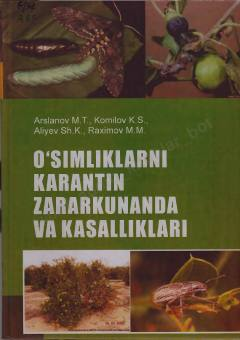

OKQishloq xo'jaligi ekinlarini karantin zararkunandalari va kasalliklaridan himoya qilish bo'yicha darslik.
Ushbu darslikda qishloq xo'jaligi ekinlariga zarar yetkazuvchi karantin zararkunandalari, kasalliklari va ularga qarshi kurashishning fitosanitar tadbirlari yoritilgan. Kitobda mamlakatimiz hududiga chetdan kirib kelishi mumkin bo'lgan o'ta xavfli organizmlar va ularning tarqalish yo'llari haqida batafsil ma'lumot berilgan. Nashr oliy o'quv yurtlarining qishloq xo'jaligi va karantin yo'nalishi talabalari hamda mutaxassislar uchun mo'ljallangan.